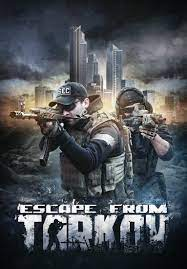

4,000 hours
Rust

Game Description: Rust is a multiplayer survival video game developed by Facepunch Studios. The objective of Rust is to survive in the wilderness using gathered or stolen materials. Players must successfully manage their hunger, thirst, and health, or risk dying. Despite the presence of hostile animals such as bears and wolves, the primary threat to the player is other players due to the game being solely multiplayer. Combat is accomplished through firearms and various weapons, such as bows
Game Genre: Multiplayer survival game
Hours Played: 3,736 hours
Personal Connection: One of my high school friends showed me Rust about 8 years ago. I bought it while I was still playing video games on my parent's old PC. I could technically run it, but it did not run well enough to play. I had to wait about year until I could build and play on my computer to truly play Rust. Rust holds a special place in my heart cause it was the first game that I truly enjoyed and could play everyday all day as you can probably tell. I have played Rust with hundreds of other people and made connects with everyone. I do not have the time to play Rust anymore but I still talk to many of the people that I played rust with 8 years ago.
3,000 hours
Escape from Tarkov

Game Description: Escape from Tarkov is a multiplayer tactical first-person shooter video game in development by Battlestate Games for Microsoft Windows. The game is set in the fictional Norvinsk region in northwestern Russia, where a war is taking place between two private military companies (United Security "USEC" and the Battle Encounter Assault Regiment "BEAR"). Players join matches called "raids" in which they fight other players and bots for loot and aim to survive and escape.
Game Genre: Multiplayer tactical first-person shooter
Hours Played: 2,307 hours
Personal Connection: I started playing Escape from Tarkov(EFT) during the Spring of 2020, during the COVID pandemic. I also streamed EFT on twitch during COVID since I had extra time at home. I ended up gathering a following on Twitch from EFT and ended up making affiliate on Twitch. This really helped me stay positive during a hard time since I was able to interact with many different people everyday about something that we enjoyed.
1,000 hours
Due Process

Game Description: Due Process is an online multiplayer tactical first-person shooter video game. The game's core revolves around teamwork and communication, allowing players to draw a "playbook" during the planning phase onto the hand-curated, procedurally generated maps. The visuals are inspired by '90s arcade light gun games, such as Time Crisis, and it is set in a cyberpunk dystopia.
Game Genre: Multiplayer tactical first-person shooter
Hours Played: 618 hours
Personal Connection: The GPU in my computer was faulty and started crashing so I had to send it back under warranty for repairs. In the meanwhile I replaced it with a much slower and older GPU. My brother had found Due Process and was playing it competitively so I gave it a try since my PC with the older GPU could run it. I ended up liking the game and started playing with all of the competitive players. I joined a competitive team and played with them for a year until the developers changed the direction of the game and lost the competitive community.
Counter Strike 2
Game Description: Like previous games in the series, Counter-Strike 2 is a multiplayer tactical first-person shooter, where two teams compete to complete different objectives, depending on the game mode selected.
Game Genre: Multiplayer tactical first-person shooter
Hours Played: 571 hours
Personal Connection: Counter Strike: Global Breakout (CS:GO) was the first Steam game that I ever played. CS:GO introduced me to the world of pc games. Counter-Strike and all of the games following it will hold a special place in my heart.
500 hours
Unturned

Game Description: In the survival game mode, the player's character is spawned on a game map with clothes depending on their skill set. Players must find weapons and supplies to survive against the zombies. As the player progresses through the game, they gain experience points which can then be used for upgrades or, on certain maps, as a currency for trading. Survival mode is also available in multiplayer.
Game Genre: Survival Game
Hours Played: 473 hours
Personal Connection: When I was young my parents got me and my brother laptops that were very basic. We could only play simple and not graphics intensive games. One of my long time childhood friends showed us the game Unturned. We gave it a shot and played a bunch on a private server using Logmein Hamachi. I also played in a tournament hosted my a YouTuber name P9nda in the arena mode, but sadly the tournament had problems and never happened. This was also almost the start of my competitive video game time.
League of Legends

Game Description: League of Legends is a multiplayer online battle arena (MOBA) game in which the player controls a character ("champion") with a set of unique abilities from an isometric perspective. As of 2023, there are over 160 champions available to play.
Game Genre: Multiplayer online battle arena
Hours Played: 212 hours for the 23 and 24 seasons. There is not a way to tell overall hours but I suspect that I have played 1000-1500 hours in total.
Personal Connection: I originally started playing League of Legends(LOL) with a high school friend. I have most played LOL as a way to connect with my friends and the people I meet at school. I generally enjoy the game but it can be one of the most frustrating and disappointing game that I have ever played.
7 Days to Die

Game Description: 7 Days to Die is a survival horror video game set in an open world. The goal of 7 Days to Die is to survive for as long as possible while fending off the elements and zombies. The player can either spawn into a randomly generated world or the pre-set world of Navezgane, Arizona. As a survival game, the player character is in constant need of water and food for sustenance, as well as being vulnerable to injury and illness.
Game Genre: Survival horror
Hours Played: 158 hours
Personal Connection: I first played 7 Days to Die at my friend's house on his Xbox 1. In my opinion the Xbox port of the game was not as good as the PC version of the game. It felt janky and did not run well on Xbox split screen. I found Youtube videos on the PC version of the game and I really enjoyed watching the gameplay. I bought the PC version and play it on and off when I do not want to play multiplayer games.
100 hours
The Finals
Game Description: The Finals is a free-to-play first-person shooter, developed and published by Nexon subsidiary Embark Studios. The Finals revolves around people competing in a televised virtual combat game show. The game focuses on team-based matches on maps with a destructible environment, where players are encouraged to use the dynamic environment to their advantage.
Game Genre: Multiplayer first-person shooter
Hours Played: 27 hours
Personal Connection: I do not have a story about The Finals like I do for the other games, but I play The Finals with several of the friends I made from when I played Due Process. My friends are in the top 500 players of the ranked part of the game and if I had more time, I might be playing The Finals competitively with my old Due Process friends.